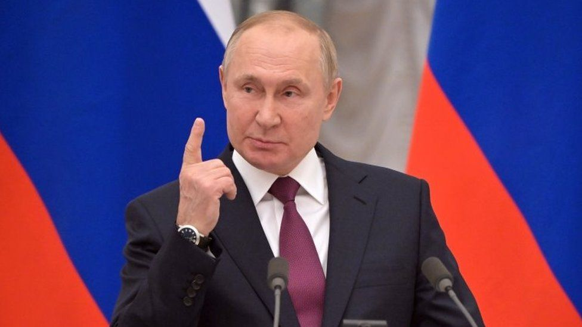

Có thể bạn chưa biết?
HƠI ĐÁNG QUAN NGẠI
Theo thông báo mới nhất, Mỹ và các đồng minh sẽ phong toả toàn bộ tài sản của Tổng thống Nga Putin và các quan chức nước này.
Trước đó Liên minh châu Âu (EU) và Anh cũng có thông báo tương tự về việc đóng băng mọi tài sản ở châu Âu của Tổng thống Putin và Ngoại trưởng Nga Sergey Lavrov.
Trước các động thái ‘cứng rắn’ này Bộ Ngoại giao Nga cũng đã lên tiếng về động thái của Anh “Cả ông Putin và ông Lavrov đều không có tài sản ở Anh hay bất kỳ nơi nào ở nước ngoài”.
Có vẻ như các biện pháp trừng phạt ‘cứng rắn’ và vô ích này sẽ giúp Tổng thống Ukraine cảm thấy mình không bị bỏ rơi như ông đã phát biểu. Ít nhất động thái này cũng ngăn được Tổng thống Putin mở tài khoản ngân hàng mới tại Mỹ hay châu Âu, điều mà trước đây ông chưa từng làm.
Cre: Beatvn
